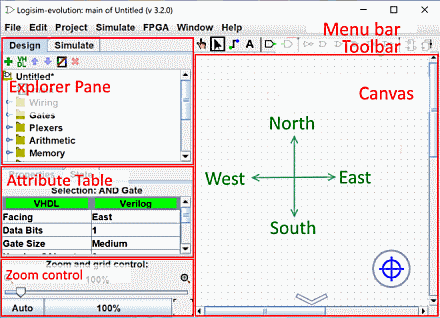

הקנבס
הבד הוא באמת החלק הגלוי ביותר של Liogisim-אבולוציה היא המקום שבו אתה מצייר את מעגלים והסמל שלהם כדי סוף סוף לדמות את הפעולה.

הוא מורכב מכמה אלמנטים בלבד:
פסי גלילה אופקיים ואנכיים : הם פועלים כמו ברוב התוכניות, פשוט גרור את המחוונים כדי להזיז את לראות חלקים אחרים של הציור. ניתן גם לתפעל אותם מהמקלדת או העכבר באמצעות הפעולות הבאות שילובים:
- גלגל העכבר או מקשים חץ למעלה/למטה : גלילה אנכית
- גלגל Shift-עכבר או מקשי חץ ימינה/שמאלה: גלילה אופקית
- מפתח PgUp : עבור לראש הדף
- מפתח PgDn : עבור לתחתית הדף
מחווני טווח כאשר הסכימה גדולה יותר משטח התצוגה של המחוונים. ה קווי עזר המוצגים בפינות ו/או בצדדים מציינים את הכיוונים שבהם הציור משתרע. לְהַלָן הוא דוגמה לאינדיקטורים בראש העמוד.

לחצן המרכז  הוא מציב את מרכז התרשים במרכז משטח העבודה.
הוא מציב את מרכז התרשים במרכז משטח העבודה.
הזום: בפינה השמאלית התחתונה נמצאת השליטה של גורם הזום. אתה יכול לשנות אותו על ידי גרירת הסמן או באמצעות אחד משני הכפתורים משמאל ומימין לקצב או עם Ctrl - עכבר גלגלבאזור העבודה.

הלחצן 100% : מתאים לזום כדי להציג את הדיאגרמה בגודלה האמיתי.
הלחצן אוטומטי : מתאים לזום כך שכל הדיאגרמה תהיה גלויה.
לחצן הרשת : ב-
מימין לזום, החלף מצב לסירוגין "רשת מוצגת" במצב "רשת בלתי נראית".
ב-
מימין לזום, החלף מצב לסירוגין "רשת מוצגת" במצב "רשת בלתי נראית".
הבא: התפריטים.